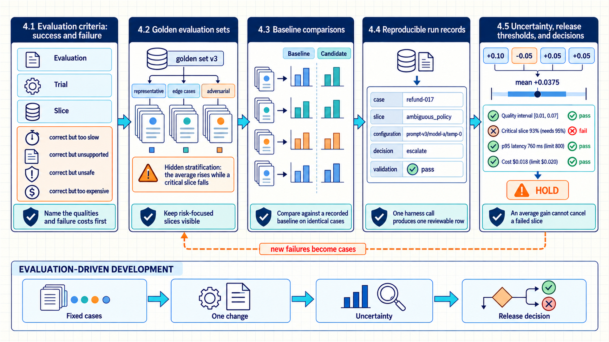
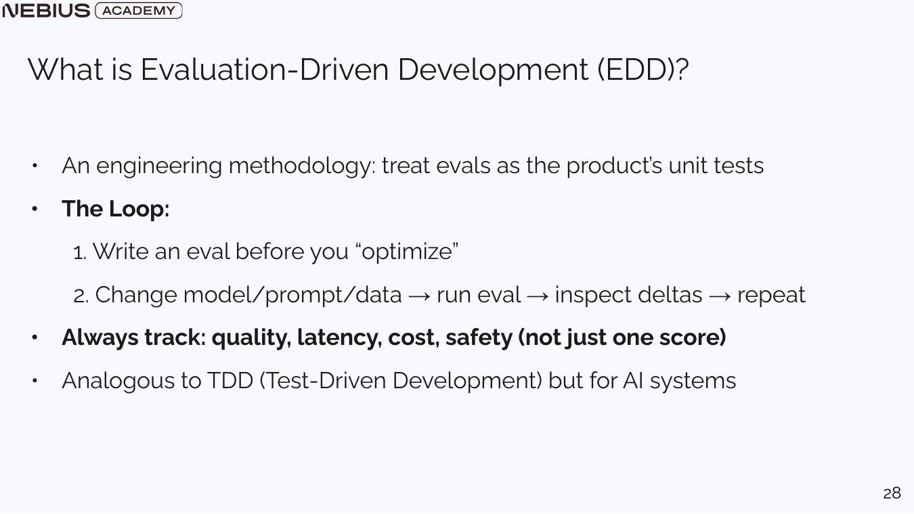
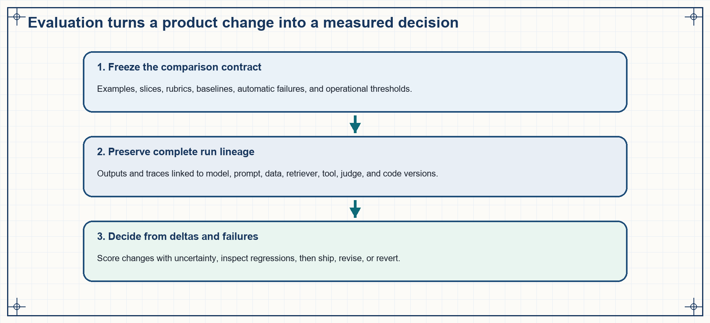

4 Evaluation-based system improvement
Chapters 1 through 3 produced a versioned model request and a record of which context the application selected. One convincing answer still cannot show that a change helps across different user groups and case types, repeated trials, or required latency and cost limits. Evaluation-driven development (EDD) is the course’s engineering workflow for treating every proposed improvement as an experiment with fixed inputs, explicit scoring, uncertainty, and a decision. The NIST AI Risk Management Framework1 likewise places measurement inside lifecycle risk management. The name and exact EDD loop are the book’s synthesis, not an external standard.

The evaluation loop connects task specifications, golden examples, baselines, slices, uncertainty, and release gates. An isolated score needs explicit scope and failure costs before it can support a decision.
4.1 Evaluation criteria: success and failure
A deterministic program often has one expected output for one input. Language tasks often have several valid outputs, raters frequently disagree, and an improvement in one quality can reduce another. Evaluation begins by naming the qualities and failure costs the product prioritizes.
An answer can be factually correct but too slow, unsafe, unsupported, or expensive. It can satisfy an automated text metric while violating the user’s intent. Model versions and benchmarks also change quickly, so a public benchmark score cannot replace product-specific evaluation criteria.
The evaluation procedure, each attempt on a case, and the subsets compared across cases have distinct names:
Evaluation: A repeatable procedure that runs a versioned system on specified cases, scores observable outcomes, and supplies evidence for a product decision.
Trial: One attempt at one evaluation task. Because models generate text unpredictably, the same system can produce different answers across multiple trials.
Slice: A defined subset of evaluation cases, such as language, customer tier, risk level, query type, document length, or tool requirement.
The evaluation specification then records four groups of measurements:
- Quality: correctness, relevance, groundedness, completeness, style, or task success.
- Operational behavior: latency, throughput, failure rate, token use, and monetary cost.
- Safety and policy: refusal behavior, harmful content, authorization, privacy, and escalation.
- Reliability: variance across trials, environments, model versions, and data slices.
Each dimension has its own measurement method and decision rule.
Aggregation can summarize ordinary variation, while veto conditions protect non-negotiable behavior. A high average cannot compensate for exposing private data or executing an unauthorized action. The evaluation record keeps per-example scores and slice labels alongside any headline metric, allowing a release decision to distinguish broad improvement from a severe local regression.
4.2 Golden evaluation sets
Evaluation criteria state which product outcomes matter, but they do not supply the cases used to measure them. A convenient sample can overrepresent easy cases and hide failures that would cause the most harm. The evaluation therefore needs a versioned collection of representative and risk-focused cases.
A golden set is that versioned collection of evaluation tasks, each with an expected outcome or grading criterion. It can combine human-authored cases, de-identified production samples, synthetic variations, and adversarial tests. CheckList2 supports organizing focused behavioral tests by capability and test type, but the exact mixture and maintenance policy here are product decisions. Production records should be de-identified or handled under the product’s privacy controls.
Evaluation cases should start from product decisions. A support-routing system needs ordinary FAQ cases, legitimate escalations, ambiguous cases, out-of-scope requests, multilingual messages, and policy-conflict cases. If missing an escalation is costly, that slice should be oversampled or reported separately so its small traffic share does not disappear inside an average.
Synthetic evaluation data
Synthetic cases cover known dimensions and failure hypotheses that are underrepresented in available production data. They are useful when new features lack production volume, rare safety edge cases require testing, or a test must isolate one changed condition.
Start from a written specification, generate candidate cases, remove duplicates, and have people or deterministic rules validate the labels. Synthetic cases expand coverage, while real failures keep the suite connected to actual product behavior.
Limitation: A generator reproduces its own assumptions and may miss real user language or operational constraints.
Hidden stratification
An overall score can rise while a critical subgroup declines. Important slice results should appear beside the headline metric, with enough examples to diagnose why the slice moved.
EDD compares two specific system versions under a controlled procedure. The run record includes the task set version, model, prompt, retrieval index, tool implementation, decoding policy, evaluator, code revision, and timing environment. Pineau and colleagues3 support preserving code, data, checklists, and experimental conditions, although the field list here is the book’s design. A baseline comparison is valid only when it changes the intended variable and preserves the remaining conditions.
Repeated runs are relevant when sampling, routing, tools, or environment state introduce variation. The comparison reports the distribution of outcomes across the full run set. The golden set is also maintained: traffic, requirements, observed failures, and risks can require new cases or renewed label review. When data, rubric, or judge changes are necessary, the protocol record marks a new version so the result is not presented as a direct continuation of an older score.
4.3 Baseline comparisons
The golden set now keeps representative cases and risk-focused slices visible across versions. A comparison cannot support a reliable conclusion when the model, prompt, retrieval, workflow, or scoring setup changes without a recorded baseline. In EDD, the golden set is run first against the versioned baseline and then against a system with one controlled factor changed. The measured difference isolates the effect of that change.
EDD adapts the discipline of Test-Driven Development to systems with probabilistic outputs and imperfect proxies. An evaluation run (eval) combines fixed cases, a scoring procedure, a comparison target, and the product decision it informs. The eval specification is versioned because user behavior and models change.
- Define the behavior and observable final state the product must achieve.
- Create and version representative cases and risk-focused slices before tuning.
- Run the current system on the fixed set and store outputs, traces, latency, cost, and version metadata.
- Change one model, prompt, retrieval, workflow, or policy factor. Use this as the default comparison method. When two factors may interact, run a planned multi-factor experiment rather than assuming the one-factor result will generalize.
- Rerun the same evaluation, estimate uncertainty, and inspect failures.
- Release, revise, or revert according to the decision rule, and add new failures to the suite.

The diagram summarizes the loop. The numbered steps specify the records and decisions needed to run it. Define the eval before inspecting a preferred output so it measures the underlying behavior across cases.

A score without the input set, system version, trace, and decision threshold cannot be reproduced or interpreted safely.
The fixed set keeps ordinary, boundary, adversarial, and production-derived cases visible in the comparison. Validated production failures can become regression cases after privacy review and label validation. Duplicate or near-duplicate cases must be controlled across development and held-out partitions, and each case record must retain its expected outcome, rubric version, source record, and label review status.
4.4 Reproducible run records
Reproducing a comparison requires a record of the system and conditions that produced every case result. A run configuration records the case-set revision, model, prompt, context policy, retrieval index, tools, decoder settings, random seed, judge versions, and runtime environment. Each result row stores that configuration beside one case’s raw output, parsed output, validation result, trace, latency, token use, tool calls, citations, and evidence of the system’s final outcome. Together these records make the baseline reproducible and reviewable.
In the abbreviated harness below, case supplies the ID, slice, and input. config supplies the fixed run settings, and system returns the observations for one case. The harness times the call and combines those values into one row. It does not define the system under test or hide a second model call.
Code example: 4.1. An evaluation harness keeps configuration and per-case evidence together.
from dataclasses import asdict
from time import perf_counter
def run_case(case, system, config):
started = perf_counter()
response = system(case.input, config=config)
elapsed_ms = 1000 * (perf_counter() - started)
return {
"case_id": case.id,
"slice": case.slice,
"config": asdict(config),
"raw_output": response.raw_output,
"parsed_output": response.parsed_output,
"validation": response.validation,
"trace": {
"tool_calls": response.trace.tool_calls,
"citations": response.trace.citations,
"final_state_evidence": response.trace.final_state_evidence,
},
"input_tokens": response.usage.input_tokens,
"output_tokens": response.usage.output_tokens,
"latency_ms": elapsed_ms,
}Example: One harness call produces one reviewable row
Case refund-017 belongs to the ambiguous_policy slice and contains a question about whether an opened item is returnable. Configuration prompt-v3/model-a/temp-0 is passed unchanged to the system. The returned row keeps that configuration beside the raw answer, parsed decision escalate, validation result pass, input and output token counts, and measured latency. A later metric calculation can use the parsed decision, while an error review can still inspect the original answer and trace.
The harness does not choose the metric or release threshold. Its role is to preserve the observations from which those decisions are calculated. When retrieval or model sampling can vary, the same case is run several times and each trial remains a separate record.
4.5 Uncertainty, release thresholds, and decisions
A controlled dataset makes runs of the baseline and changed system comparable. However, test sets are limited, and models generate text unpredictably. A small score improvement might just be random noise. A quality gain can also violate latency, cost, or safety limits.
Three measures answer those risks in turn: a bootstrap interval quantifies how much of an observed difference is random variation, slice analysis exposes a change that improves the average while breaking a specific case type, and a multi-metric gate tests the release against latency, cost, and safety limits alongside quality.
A bootstrap confidence interval resamples the evaluation cases with replacement many times and recomputes the statistic for each resample. “With replacement” means a case can appear more than once in one resample while another case is absent. The resulting statistics form an empirical distribution around the observed metric. Efron4 established the bootstrap method. Bouthillier and colleagues5 show that data sampling, initialization, and hyperparameter choices can all affect benchmark comparisons, so one percentile interval over cases does not capture every source of variation.
\[ CI_{1-\alpha}=[q_{\alpha/2}(m_{1:B}),q_{1-\alpha/2}(m_{1:B})] \tag{4.1}\]
Here, \(m_b\) is the metric calculated on bootstrap sample \(b\), \(B\) is the number of resamples, and \(q\) selects empirical quantiles. For a 95 percent interval, set \(\alpha=0.05\): the lower endpoint is the 0.025 quantile and the upper endpoint is the 0.975 quantile. The interval captures variation caused by the observed case sample. It does not correct label bias, benchmark contamination, user correlation, production distribution shift, or a metric that fails to represent the product decision. Repeated model or tool trials address run-to-run variation separately.
Worked calculation: Paired bootstrap interval
Four cases have baseline scores \((0.60, 0.80, 0.50, 0.90)\) and treatment scores \((0.70, 0.75, 0.55, 0.95)\). Pair each treatment score with its own baseline score before resampling, giving deltas \((+0.10, -0.05, +0.05, +0.05)\). The observed mean improvement is \(0.0375\).
1. A resample can select cases 1, 1, 3, and 4, producing deltas \((+0.10, +0.10, +0.05, +0.05)\) and a mean of \(+0.075\). 2. Another can select cases 2, 2, 3, and 4, producing \((-0.05, -0.05, +0.05, +0.05)\) and a mean of \(0\). 3. For this four-case illustration, enumerate all \(4^4 = 256\) ordered resamples. The 0.025 and 0.975 quantiles are \(-0.025\) and \(0.0875\). Result: The interval is \([-0.025, 0.0875]\). It includes zero, so this small case set does not establish a positive improvement.
Interpretation: Pairing keeps each case’s baseline and treatment together. A larger evaluation set still needs a stated resample count, seed, and quantile convention.
Code example: 4.2. Percentile bootstrap intervals retain the resampling unit.
import numpy as np
def paired_bootstrap_delta_ci(baseline, treatment, draws=10_000, seed=17):
baseline = np.asarray(baseline, dtype=float)
treatment = np.asarray(treatment, dtype=float)
if baseline.shape != treatment.shape or baseline.size == 0:
raise ValueError("baseline and treatment need the same non-empty shape")
deltas = treatment - baseline
rng = np.random.default_rng(seed)
estimates = [
deltas[rng.integers(0, len(deltas), size=len(deltas))].mean()
for _ in range(draws)
]
return tuple(np.quantile(estimates, [0.025, 0.975]))NumPy, imported as np, is a library for numerical arrays. The function turns paired scores into arrays, computes deltas, repeatedly indexes them with randomly drawn case positions, and uses quantile to return the 0.025 and 0.975 interval endpoints.
The resampling unit must match the independence assumption. When one user contributes many correlated requests, resample users or sessions as the evaluation unit. A release gate can enforce minimum quality gains and prevent critical-slice regressions, while capping p95 latency, task cost, and policy violations. Here p95 latency means the 0.95-quantile latency: 95 percent of the measured requests completed at or below that time, while the slowest 5 percent took longer.
Worked calculation: A release gate combines requirements
Consider a candidate with a quality interval of \([0.01, 0.07]\), critical-slice success of 93%, p95 latency of 760 ms, and cost of $0.018 per task. The release rule requires a positive lower interval endpoint, at least 95% critical-slice success, p95 latency no greater than 800 ms, and cost no greater than $0.020.
1. The interval, latency, and cost pass their stated requirements. 2. The critical slice fails: 93% is below 95%. Result: Hold the candidate. An average quality improvement does not cancel a failed safety-critical slice.
These values are illustrative. A production gate must state its mandatory checks before examining the candidate results.
A release decision therefore needs both an estimated change and explicit limits for every critical slice, cost, latency, and policy condition. Chapter 5 examines how automatic metrics, judge models, human ratings, and benchmarks supply those measurements and where each can mislead.
Tabassi, E. (2023). Artificial Intelligence Risk Management Framework (AI RMF 1.0) (NIST AI 100-1). National Institute of Standards and Technology. https://doi.org/10.6028/NIST.AI.100-1. Link checked September 16, 2026. The framework supports lifecycle risk governance and measurement. It does not define the course’s EDD workflow.↩︎
Ribeiro, M. T., Wu, T., Guestrin, C., & Singh, S. (2020). Beyond accuracy: Behavioral testing of NLP models with CheckList. In Proceedings of the 58th Annual Meeting of the Association for Computational Linguistics (pp. 4902–4912). Association for Computational Linguistics. https://doi.org/10.18653/v1/2020.acl-main.442. Link checked September 16, 2026. CheckList supports capability-focused cases, not a universal golden-set composition. ↩︎
Pineau, J., Vincent-Lamarre, P., Sinha, K., Larivière, V., Beygelzimer, A., d’Alché-Buc, F., Fox, E., & Larochelle, H. (2021). Improving reproducibility in machine learning research: A report from the NeurIPS 2019 reproducibility program. Journal of Machine Learning Research, 22(164), 1–20. https://jmlr.org/papers/v22/20-303.html. Link checked September 16, 2026.↩︎
Efron, B. (1979). Bootstrap methods: Another look at the jackknife. The Annals of Statistics, 7(1), 1–26. https://doi.org/10.1214/aos/1176344552. Link checked September 16, 2026. The source establishes the resampling method. The interval type and resampling unit still require an evaluation-specific choice.↩︎
Bouthillier, X., Delaunay, P., Bronzi, M., Trofimov, A., Nichyporuk, B., Szeto, J., Sepah, N., Raff, E., Madan, K., Voleti, V., Kahou, S. E., Michalski, V., Serdyuk, D., Arbel, T., Pal, C., Varoquaux, G., & Vincent, P. (2021). Accounting for variance in machine learning benchmarks. arXiv. https://arxiv.org/abs/2103.03098. Link checked September 16, 2026. The paper supports accounting for several sources of variation, not treating one bootstrap interval as complete uncertainty analysis. ↩︎